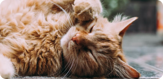

Find Your New Little Cat, Make a New Friend
Teman barumu yang lucu menunggu mu, ayo temukan mereka sekarang


Cat Categories
Anggora
Anggora turki adalah salah satu ras kucing domestik alami tertua. Ras ini berasal dari Ankara, Turki. Kucing ini sangat populer dan terkenal di Indonesia.
Persia
Kucing persia adalah ras kucing domestik berbulu panjang dengan karakter wajah bulat dan moncong pendek. Namanya mengacu pada Persia.
British Shorthair
Kucing bulu pendek britania adalah salah satu ras kucing tertua di inggris. Kucing ini adalah kucing berbadan sedang dengan bulu yang pendek.